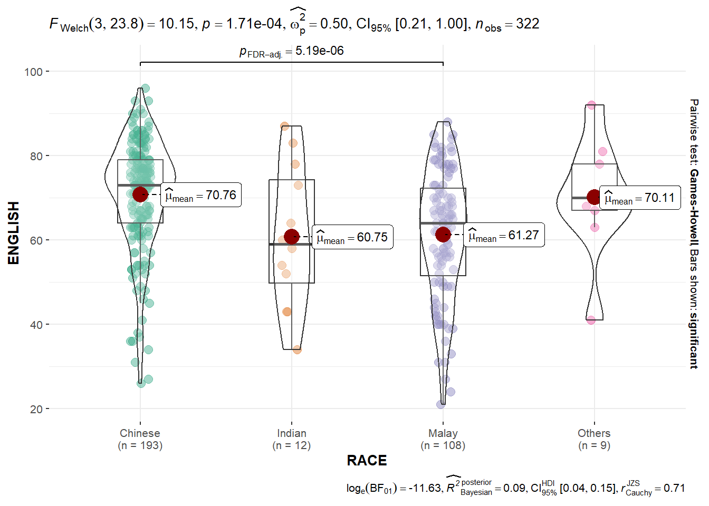
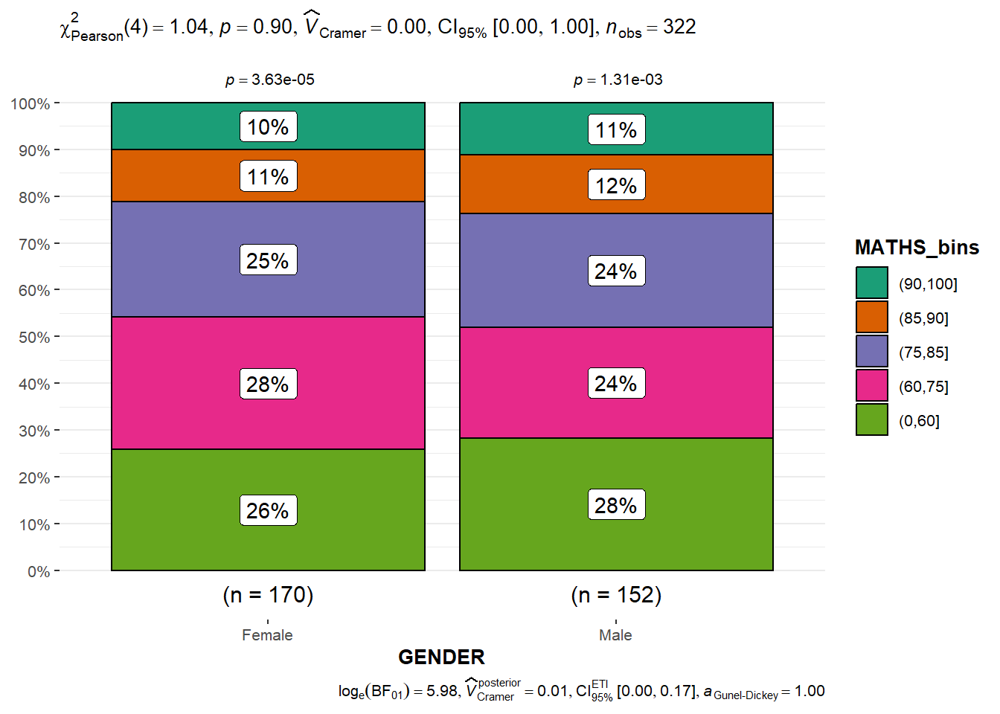
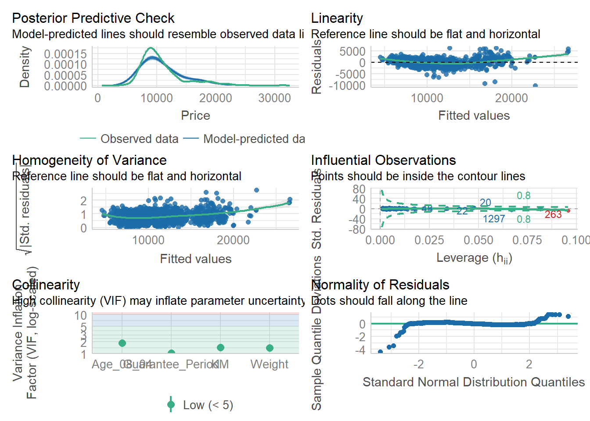
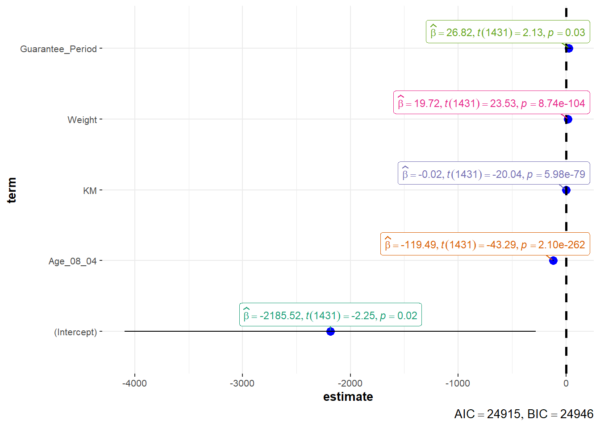
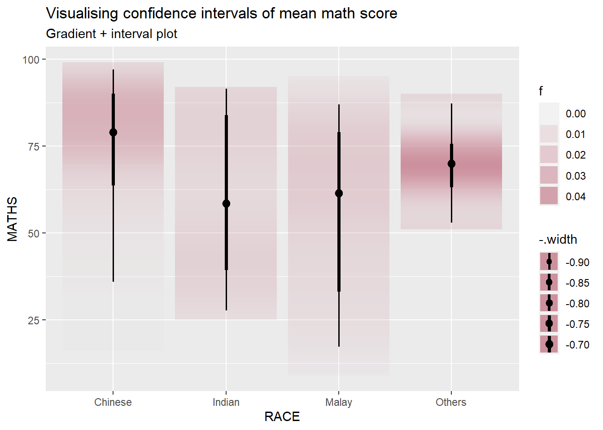
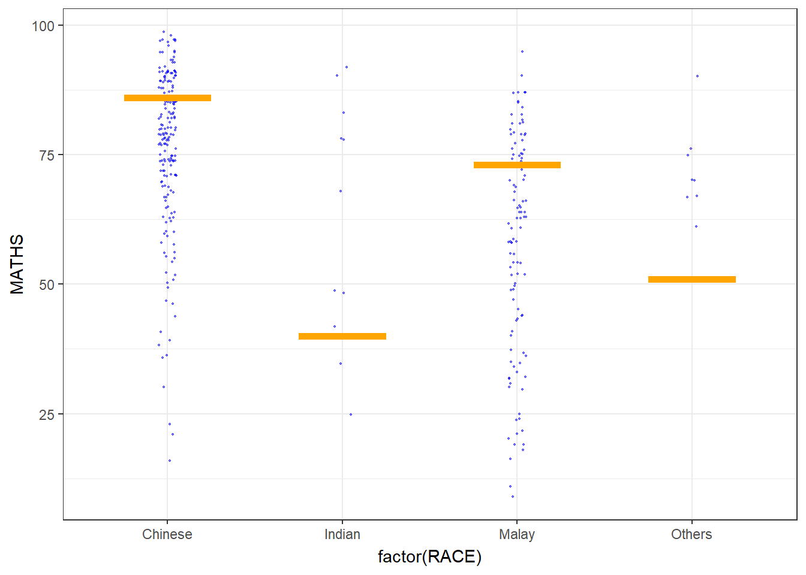
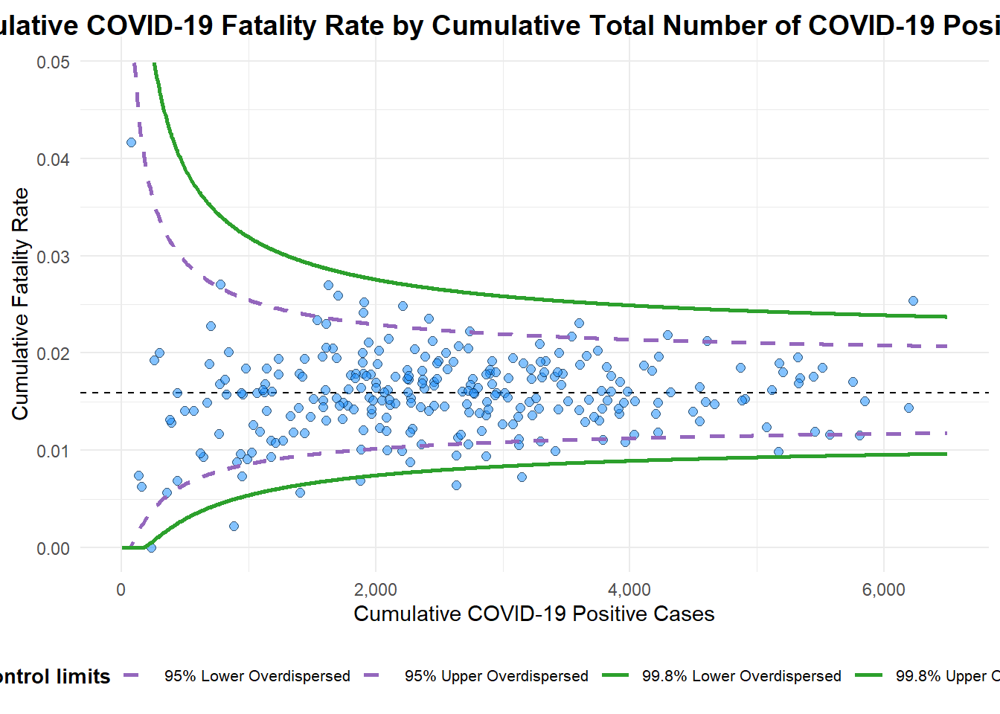

pacman::p_load(ggstatsplot, tidyverse)Hands-on_Ex04
1. Visual statistical Analytics
1.1 Learning outcome
ggstatsplot package to create visual graphics with rich statistical information,
performance package to visualise model diagnostics, and
parameters package to visualise model parameters
1.2 Getting Started
1.2.1 Load Packages
1.2.2 Importing Data
exam <- read_csv("data/Exam_data.csv")1.2.3 One-sample test: gghistostats() method
In the code chunk below, gghistostats() is used to to build an visual of one-sample test on English scores.
Show the code
set.seed(1234)
gghistostats(
data = exam,
x = ENGLISH,
type = "bayes",
test.value = 60,
xlab = "English scores"
)
1.2.3 Unpacking the Bayes Factor
A Bayes factor is the ratio of the likelihood of one particular hypothesis to the likelihood of another. It can be interpreted as a measure of the strength of evidence in favor of one theory among two competing theories.
That’s because the Bayes factor gives us a way to evaluate the data in favor of a null hypothesis, and to use external information to do so. It tells us what the weight of the evidence is in favor of a given hypothesis.
###1.2.4 Oneway ANOVA Test: ggbetweenstats() methodIn the code chunk below,ggbetweenstats()` is used to build a visual for One-way ANOVA test on English score by race.
Show the code
ggbetweenstats(
data = exam,
x = RACE,
y = ENGLISH,
type = "p",
mean.ci = TRUE,
pairwise.comparisons = TRUE,
pairwise.display = "s",
p.adjust.method = "fdr",
messages = FALSE
)
1.2.5 Significant Test of Association (Depedence) : ggbarstats() methods
In the code chunk below, the Maths scores is binned into a 4-class variable by using cut().
Show the code
exam1 <- exam %>%
mutate(MATHS_bins =
cut(MATHS,
breaks = c(0,60,75,85,90,100))
)
ggbarstats(exam1,
x = MATHS_bins,
y = GENDER)
1.3 Visualising Models
In this section, you will learn how to visualise model diagnostic and model parameters by using parameters package. Toyota Corolla case study will be used. The purpose of study is to build a model to discover factors affecting prices of used-cars by taking into consideration a set of explanatory variables.
1.3.1 Installing and loading the required libraries and import data
Show the code
pacman::p_load(readxl, performance, parameters, see)
car_resale <- read_xls("data/ToyotaCorolla.xls",
"data")
car_resale# A tibble: 1,436 × 38
Id Model Price Age_08_04 Mfg_Month Mfg_Year KM Quarterly_Tax Weight
<dbl> <chr> <dbl> <dbl> <dbl> <dbl> <dbl> <dbl> <dbl>
1 81 TOYOTA … 18950 25 8 2002 20019 100 1180
2 1 TOYOTA … 13500 23 10 2002 46986 210 1165
3 2 TOYOTA … 13750 23 10 2002 72937 210 1165
4 3 TOYOTA… 13950 24 9 2002 41711 210 1165
5 4 TOYOTA … 14950 26 7 2002 48000 210 1165
6 5 TOYOTA … 13750 30 3 2002 38500 210 1170
7 6 TOYOTA … 12950 32 1 2002 61000 210 1170
8 7 TOYOTA… 16900 27 6 2002 94612 210 1245
9 8 TOYOTA … 18600 30 3 2002 75889 210 1245
10 44 TOYOTA … 16950 27 6 2002 110404 234 1255
# ℹ 1,426 more rows
# ℹ 29 more variables: Guarantee_Period <dbl>, HP_Bin <chr>, CC_bin <chr>,
# Doors <dbl>, Gears <dbl>, Cylinders <dbl>, Fuel_Type <chr>, Color <chr>,
# Met_Color <dbl>, Automatic <dbl>, Mfr_Guarantee <dbl>,
# BOVAG_Guarantee <dbl>, ABS <dbl>, Airbag_1 <dbl>, Airbag_2 <dbl>,
# Airco <dbl>, Automatic_airco <dbl>, Boardcomputer <dbl>, CD_Player <dbl>,
# Central_Lock <dbl>, Powered_Windows <dbl>, Power_Steering <dbl>, …##1.3.2 Multiple Regression Model using lm() The code chunk below is used to calibrate a multiple linear regression model by using lm() of Base Stats of R.
Show the code
model <- lm(Price ~ Age_08_04 + Mfg_Year + KM +
Weight + Guarantee_Period, data = car_resale)
model
Call:
lm(formula = Price ~ Age_08_04 + Mfg_Year + KM + Weight + Guarantee_Period,
data = car_resale)
Coefficients:
(Intercept) Age_08_04 Mfg_Year KM
-2.637e+06 -1.409e+01 1.315e+03 -2.323e-02
Weight Guarantee_Period
1.903e+01 2.770e+01 ##1.3.3 Model Diagnostic: checking for multicolinearity: In the code chunk, check_collinearity() of performance package.
Show the code
check_collinearity(model)# Check for Multicollinearity
Low Correlation
Term VIF VIF 95% CI Increased SE Tolerance Tolerance 95% CI
KM 1.46 [ 1.37, 1.57] 1.21 0.68 [0.64, 0.73]
Weight 1.41 [ 1.32, 1.51] 1.19 0.71 [0.66, 0.76]
Guarantee_Period 1.04 [ 1.01, 1.17] 1.02 0.97 [0.86, 0.99]
High Correlation
Term VIF VIF 95% CI Increased SE Tolerance Tolerance 95% CI
Age_08_04 31.07 [28.08, 34.38] 5.57 0.03 [0.03, 0.04]
Mfg_Year 31.16 [28.16, 34.48] 5.58 0.03 [0.03, 0.04]Show the code
check_c <- check_collinearity(model)
plot(check_c)
1.3.4 Model Diagnostic: checking normality assumption
Checking the normality assumption is an important step when working with linear regression models. The normality assumption in the context of linear regression refers to the normal distribution of the residuals (the differences between observed and predicted values).
Show the code
model1 <- lm(Price ~ Age_08_04 + KM +
Weight + Guarantee_Period, data = car_resale)
check_n <- check_normality(model1)
plot(check_n)
1.3.5 Model Diagnostic: Check model for homogeneity of variances
In the code chunk, check_heteroscedasticity() of performance package.
Show the code
check_h <- check_heteroscedasticity(model1)
plot(check_h)
1.3.6 Model Diagnostic: Complete check
We can also perform the complete by using check_model()
check_model(model1)
1.3.7 Visualising Regression Parameters: ggcoefstats() methods
In the code below, ggcoefstats() of ggstatsplot package to visualise the parameters of a regression model.
ggcoefstats(model1,
output = "plot")
Coefficients and Confidence Intervals:
Each point in the plot represents a coefficient estimate from your regression model.
The horizontal position of the point indicates the estimated coefficient value.
The vertical line extending from the point represents the 95% confidence interval for that coefficient.
Color Coding:
Points and confidence intervals may be color-coded to indicate statistical significance. For example, significant coefficients might be colored differently from non-significant ones.
It’s common to use different colors for statistically significant (p < 0.05) and non-significant (p ≥ 0.05) coefficients.
Vertical Reference Line:
- A vertical reference line at the value of 0 on the x-axis indicates the null hypothesis (no effect). Coefficients to the right of this line are positive, and those to the left are negative.
2. Visualising Uncertainty
Exploring uncertainty through visual representation is a recent development in statistical graphics. Throughout this chapter, you’ll acquire practical skills in crafting statistical graphics that effectively convey uncertainty.
2.1 Installing and loading the packages and importing data
For the purpose of this exercise, the following R packages will be used, they are:
tidyverse, a family of R packages for data science process,
plotly for creating interactive plot,
gganimate for creating animation plot,
DT for displaying interactive html table,
crosstalk for for implementing cross-widget interactions (currently, linked brushing and filtering), and
ggdist for visualising distribution and uncertainty.
Show the code
devtools::install_github("wilkelab/ungeviz")Error in loadNamespace(i, c(lib.loc, .libPaths()), versionCheck = vI[[i]]): namespace 'htmltools' 0.5.6 is already loaded, but >= 0.5.7 is requiredShow the code
pacman::p_load(ungeviz, plotly, crosstalk,
DT, ggdist, ggridges,
colorspace, gganimate, tidyverse)package 'plotly' successfully unpacked and MD5 sums checked
The downloaded binary packages are in
C:\Users\carol\AppData\Local\Temp\Rtmp8UAGXw\downloaded_packages
package 'DT' successfully unpacked and MD5 sums checked
The downloaded binary packages are in
C:\Users\carol\AppData\Local\Temp\Rtmp8UAGXw\downloaded_packagesShow the code
exam <- read_csv("data/Exam_data.csv")2.2 Visualizing the uncertainty of point estimates with interactive error bars
Show the code
my_sum <- exam %>%
group_by(RACE) %>%
summarise(
n=n(),
mean=mean(MATHS),
sd=sd(MATHS)
) %>%
mutate(se=sd/sqrt(n-1))
shared_df = SharedData$new(my_sum)
bscols(widths = c(4,8),
ggplotly((ggplot(shared_df) +
geom_errorbar(aes(
x=reorder(RACE, -mean),
ymin=mean-2.58*se,
ymax=mean+2.58*se),
width=0.2,
colour="black",
alpha=0.9,
size=0.5) +
geom_point(aes(
x=RACE,
y=mean,
text = paste("Race:", `RACE`,
"<br>N:", `n`,
"<br>Avg. Scores:", round(mean, digits = 2),
"<br>95% CI:[",
round((mean-2.58*se), digits = 2), ",",
round((mean+2.58*se), digits = 2),"]")),
stat="identity",
color="red",
size = 1.5,
alpha=1) +
xlab("Race") +
ylab("Average Scores") +
theme_minimal() +
theme(axis.text.x = element_text(
angle = 45, vjust = 0.5, hjust=1)) +
ggtitle("99% Confidence interval of average /<br>maths scores by race")),
tooltip = "text"),
DT::datatable(shared_df,
rownames = FALSE,
class="compact",
width="100%",
options = list(pageLength = 10,
scrollX=T),
colnames = c("No. of pupils",
"Avg Scores",
"Std Dev",
"Std Error")) %>%
formatRound(columns=c('mean', 'sd', 'se'),
digits=2))Error in ggplotly((ggplot(shared_df) + geom_errorbar(aes(x = reorder(RACE, : could not find function "ggplotly"2.3 Visualizing the uncertainty of point estimates: ggdist methods
In the code chunk below, stat_gradientinterval() of ggdist is used to build a visual for displaying distribution of maths scores by race.
Show the code
exam %>%
ggplot(aes(x = RACE,
y = MATHS)) +
stat_gradientinterval(
fill = "pink3",
show.legend = TRUE
) +
labs(
title = "Visualising confidence intervals of mean math score",
subtitle = "Gradient + interval plot")
2.4 Visualising Uncertainty with Hypothetical Outcome Plots (HOPs)
Hypothetical Outcome Plots (HOPs) are a visualization technique used to depict uncertainty in statistical analyses, particularly in the context of causal inference and counterfactual scenarios. HOPs provide a way to explore the range of potential outcomes under different conditions, helping users understand the impact of uncertainty on the results of a statistical model.
Show the code
ggplot(data = exam,
(aes(x = factor(RACE),
y = MATHS))) +
geom_point(position = position_jitter(
height = 0.3,
width = 0.05),
size = 0.4,
color = "blue",
alpha = 1/2) +
geom_hpline(data = sampler(25,
group = RACE),
height = 0.6,
color = "orange") +
theme_bw() +
transition_states(.draw, 1, 3)
3. Funnel Plots for Fair Comparisons
Funnel plot is a specially designed data visualisation for conducting unbiased comparison between outlets, stores or business entities.
3.1 Installing and Launching R Packages and import data
| Packages | Description |
|---|---|
| readr | importing csv into R |
| FunnelPlotR | create funnel plot |
| ggplot2 | creating funnel plot manually |
| knitr | build static html table |
| plotly | creating interactive funnel plot |
pacman::p_load(tidyverse, FunnelPlotR, plotly, knitr)package 'plotly' successfully unpacked and MD5 sums checked
The downloaded binary packages are in
C:\Users\carol\AppData\Local\Temp\Rtmp8UAGXw\downloaded_packagescovid19 <- read_csv("data/COVID-19_DKI_Jakarta.csv") %>%
mutate_if(is.character, as.factor)3.2 FunnelPlotR methods
Funnel plots are particularly valuable in identifying publication bias, a phenomenon where studies reporting positive or statistically significant results are more likely to be published than studies with neutral or negative findings. Funnel plots visually depict the distribution of study effects, helping researchers detect asymmetry.
Funnel plots can also reveal small-study effects, where smaller studies show more extreme results compared to larger studies. This can indicate potential biases in the selection or reporting of smaller studies.
Show the code
funnel_plot(
numerator = covid19$Death,
denominator = covid19$Positive,
group = covid19$`Sub-district`,
data_type = "PR",
xrange = c(0, 6500),
yrange = c(0, 0.05),
label = NA,
title = "Cumulative COVID-19 Fatality Rate by Cumulative Total Number of COVID-19 Positive Cases", #<<
x_label = "Cumulative COVID-19 Positive Cases", #<<
y_label = "Cumulative Fatality Rate" #<<
)
A funnel plot object with 267 points of which 7 are outliers.
Plot is adjusted for overdispersion. 3.3 Funnel Plot for Fair Visual Comparison: ggplot2 methods
The following code chunk enable to create funnel plot manually.
Show the code
#Computing the basic derived fields
df <- covid19 %>%
mutate(rate = Death / Positive) %>%
mutate(rate.se = sqrt((rate*(1-rate)) / (Positive))) %>%
filter(rate > 0)
fit.mean <- weighted.mean(df$rate, 1/df$rate.se^2)
#Calculate lower and upper limits for 95% and 99.9% CI
number.seq <- seq(1, max(df$Positive), 1)
number.ll95 <- fit.mean - 1.96 * sqrt((fit.mean*(1-fit.mean)) / (number.seq))
number.ul95 <- fit.mean + 1.96 * sqrt((fit.mean*(1-fit.mean)) / (number.seq))
number.ll999 <- fit.mean - 3.29 * sqrt((fit.mean*(1-fit.mean)) / (number.seq))
number.ul999 <- fit.mean + 3.29 * sqrt((fit.mean*(1-fit.mean)) / (number.seq))
dfCI <- data.frame(number.ll95, number.ul95, number.ll999,
number.ul999, number.seq, fit.mean)
#Plotting a static funnel plot
p <- ggplot(df, aes(x = Positive, y = rate)) +
geom_point(aes(label=`Sub-district`),
alpha=0.4) +
geom_line(data = dfCI,
aes(x = number.seq,
y = number.ll95),
size = 0.4,
colour = "grey40",
linetype = "dashed") +
geom_line(data = dfCI,
aes(x = number.seq,
y = number.ul95),
size = 0.4,
colour = "grey40",
linetype = "dashed") +
geom_line(data = dfCI,
aes(x = number.seq,
y = number.ll999),
size = 0.4,
colour = "grey40") +
geom_line(data = dfCI,
aes(x = number.seq,
y = number.ul999),
size = 0.4,
colour = "grey40") +
geom_hline(data = dfCI,
aes(yintercept = fit.mean),
size = 0.4,
colour = "grey40") +
coord_cartesian(ylim=c(0,0.05)) +
annotate("text", x = 1, y = -0.13, label = "95%", size = 3, colour = "grey40") +
annotate("text", x = 4.5, y = -0.18, label = "99%", size = 3, colour = "grey40") +
ggtitle("Cumulative Fatality Rate by Cumulative Number of COVID-19 Cases") +
xlab("Cumulative Number of COVID-19 Cases") +
ylab("Cumulative Fatality Rate") +
theme_light() +
theme(plot.title = element_text(size=12),
legend.position = c(0.91,0.85),
legend.title = element_text(size=7),
legend.text = element_text(size=7),
legend.background = element_rect(colour = "grey60", linetype = "dotted"),
legend.key.height = unit(0.3, "cm"))
#Interactive Funnel Plot: plotly + ggplot2
fp_ggplotly <- ggplotly(p,
tooltip = c("label",
"x",
"y"))Error in ggplotly(p, tooltip = c("label", "x", "y")): could not find function "ggplotly"Show the code
fp_ggplotlyError in eval(expr, envir, enclos): object 'fp_ggplotly' not foundIn summary, while ggplot2 is not inherently designed for funnel plots in the context of meta-analysis, it provides a powerful and flexible platform for creating custom visualizations, including funnel plots. The choice between the standard funnel plot methodology and ggplot2 would depend on the specific requirements of the analysis and the desired level of customization and flexibility.